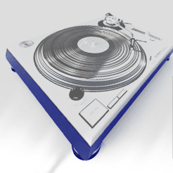
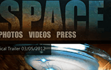

Home
Services
Work
Contact
Work

Wordpress
" alt="I built my brother's website using Wordpress. Wordpress is easy and I was able to use my own graphics for the most part, but I prefer building from scratch as opposed navigating and tweaking someone else's code.
dustinaguilar.com/vivid
">
Adobe CS6 (Illustrator, Photoshop, Fireworks) Sublime Text 3
" alt="Brinkman Surveying wanted a good looking web presence that allows their customers to communicate with them online. The site is streamlined and mobile-friendly.
brinkmansurveying.com
">
Illustrator CS5
" alt="This was a quick, fun graphic design gig. I love these kinds of projects.">
Notepad ++, Firebug, Photoshop CS5
" alt="I designed and built the initial website for Ultimate Party Bus. Unfortunately, time constraints with school and work affected my ability to complete the project the way I had envisioned at the time. I'll hopefully be able to pick up where I left off later this year.
work.dustinaguilar.com/da_upb
">
Fireworks CS5, Photoshop CS5
" alt="One of my tasks at 352 was to create an imaginary charity and design a homepage for it. I came up with a charity that keeps teachers and students engaged with music via electronic components such as modular synths. ">

Fireworks CS5, Photoshop CS5
" alt="The goal of this project from 352 was to mock a website for what inspires me. I thought of space and movies, so I put them together and created a design for a Space Movie's website. The design was built around an image from the game Starcraft 2. ">
Notepad++, Firebug, Fireworks CS6, Photoshop CS6
" alt="Same Day Appliance Repair wanted a website that looked friendly and professional, provided tips for appliance maintenance and allowed online inquiries. I'll be updating it later this year.
samedayrepairgainesville.com
samedayrepairjax.com
">
Photoshop CS5, Printed
" alt="I created and printed this small (unofficial) ad for the speaker company Cerwin-Vega. The project took about 30 minutes from start to finish, which at that time signaled a milestone in trusting my own instincts. ">
Photoshop CS5
" alt="One night I decided to work on lighting accuracy. I replaced the cars in a Mercedes Benz wallpaper photo with Sterling Limousines' H2 stretch and Range Rover. ">
{kind=link}
{kind=link}
{kind=link}
{kind=link}
{kind=link}
{kind=link}
{kind=link}
{kind=link}
{kind=link}